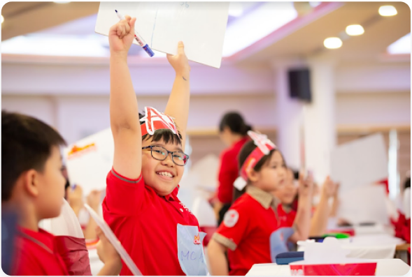

Mathnasium là nơi học sinh rèn luyện để phát triển Tư duy thông qua Toán học
Cách đây hơn 45 năm, Larry Martinek – Giáo sư Toán học người Mỹ và là cha của một cậu con trai đam mê Toán học – mong muốn tìm được phương pháp học Toán tốt nhất cho con trai cũng như các học trò của mình. Trước những thôi thúc ấy cùng với lòng yêu nghề, giáo sư Larry đã dành toàn bộ sự nghiệp của mình để nghiên cứu và tìm ra phương pháp dạy và học Toán tốt nhất, giúp các em học sinh có được nền tảng kiến thức Toán vững chắc và kỹ năng Tư duy để thành công hơn.
Qua hơn 45 năm kiểm nghiệm và chứng minh, – phương pháp Mathnasium đã chứng tỏ được sự ưu việt khi giúp hàng triệu trẻ em trên thế giới trở nên yêu thích Toán và phát triển Tư duy vượt trội. Tài liệu học tập và phương pháp của Giáo sư Larry ngày càng được sử dụng rộng rãi trong nhiều năm sau đó. Ở Los Angeles, ông được mệnh danh là “Larry, The Math Guy”.
Thay vì dựa vào phương pháp học thuộc lòng truyền thống và làm các bài tập lặp đi lặp lại, giáo sư Larry tập trung vào việc giúp các em suy nghĩ tích cực về môn Toán, thấu hiểu và phân tích bản chất của các bài Toán hoặc vấn đề gặp phải, từ đó vận dụng Tư duy để giải quyết.
Mathnasium là một thương hiệu quốc tế đã được kiểm nghiệm và chứng minh trên toàn thế giới và đã nhận được sự tin tưởng của hàng triệu phụ huynh khi lựa chọn nơi đào tạo Toán Tư duy cho con em mình. Khi về Việt Nam, Mathnasium còn được cộng hưởng thêm những giá trị đặc biệt đó là được giảng dạy bởi đội ngũ Giáo viên có năng lực, đầy nhiệt huyết và luôn tận tâm với từng em học sinh. Chính vì những giá trị đó, Mathnasium Việt Nam đã vinh dự nhận được sự tín nhiệm của các bậc phụ huynh và sự gắn bó của các em học sinh suốt nhiều năm qua.
Thông qua việc dạy và học Toán bằng phương pháp cá nhân hóa, Mathnasium giúp cho các em học sinh hình thành thói quen suy luận để giải quyết vấn đề rồi từ đó phát triển Tư duy một cách toàn diện. Với nền tảng Tư duy sắc bén, các em sẽ tự tin khám phá tri thức, định hình tài năng và thành công ở tương lai.